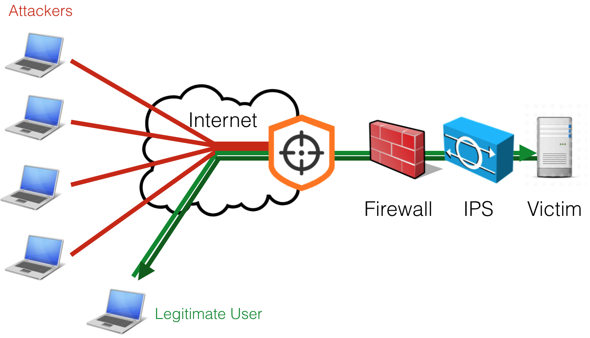
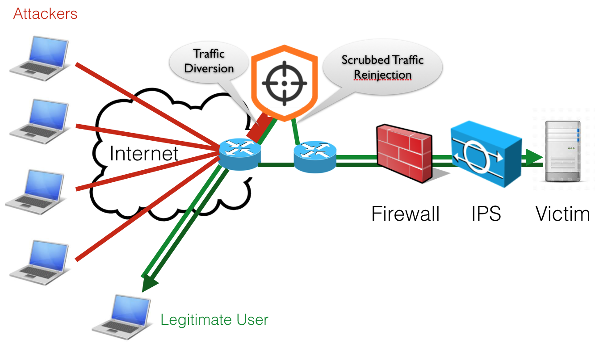

Режимы работы
Программное обеспечение может работать в режиме прозрачного моста или маршрутизации, в симметричном или асимметричном режиме.
Режим прозрачного моста
При запуске программного обеспечения в качестве прозрачного моста (по умолчанию) необходимо указать пару интерфейсов для мостового соединения трафика. Этот режим может работать как в двунаправленном режиме, проверяя трафик в обоих направлениях, так и в асимметричном режиме, задавая –асимметричная-маршрутизация|-A опция (только входящий трафик), когда она используется, например, с методами перенаправления трафика.
Пример файла конфигурации:
--lan-interface=zc:eth1
--wan-interface=zc:eth2

Режим маршрутизации
При запуске программы в режиме маршрутизации (с указанием —маршрутизация|-x вариант), можно использовать один или два интерфейса. Также в этой конфигурации можно использовать как симметричный, так и асимметричный режим. В этом режиме IP-адрес на интерфейсе LAN должен быть настроен с использованием стандартной конфигурации ОС (например, сетевого менеджера Linux). Настроенный IP-адрес следует использовать в качестве шлюза/следующего перехода. Таблицу маршрутизации также необходимо настроить с помощью инструмента nscrub API или CLI. Чтобы научиться использовать API, прочитайте Конфигурация контроля трафика раздел и документацию API.
Пример файла конфигурации (2 интерфейса):
--lan-interface=zc:eth1
--wan-interface=zc:eth2
--routing
